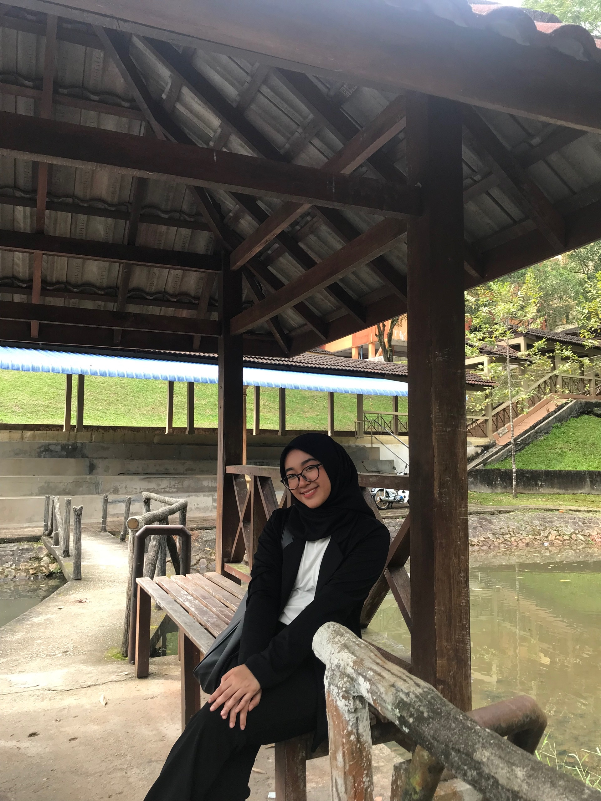

| HOMEPAGE | ABOUT ME | EDUCATION | FAMILY | GALLERY | CONTACT |
|---|

Hi and Assalamualaikum. My name is Nur Syahiera binti Ismail, I am 20 years old this year and originally from Terengganu. I am currently studying in Universiti Teknologi Mara (UiTM) Kelantan, Machang branch and one of Faculty Information Management student's. My birthday is 13 July, 2002. I have six sister and three brothers. Sekolah Kebangsaan Tapah is my primary school and Intan Premier High School is my secondary school. And now, I'm further my study here.
A person without any aim is like a ship without a rudder. Such a person is actually directionless. Different persons have different aims. My aim in life is to be a lecturer. According to me, it is the best way to serve the nation. A lecturer is entrusted with the task of making honest citizens who would be able to guide the nation in the right direction. I respect my lecturer and want to be like them. I shall import the overall knowledge of education.